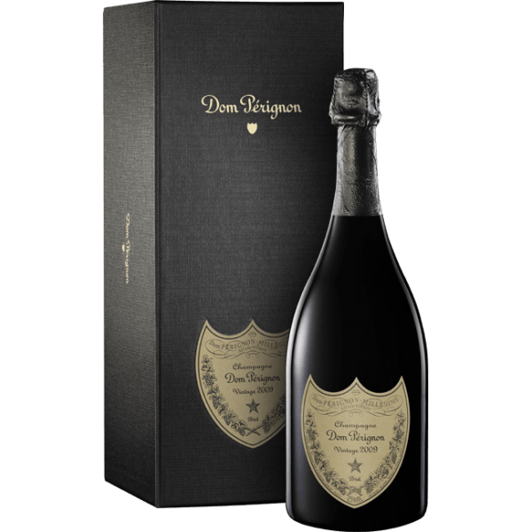
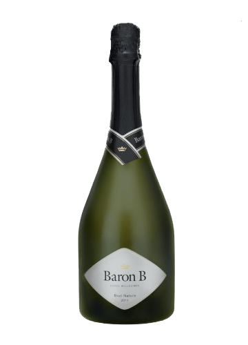
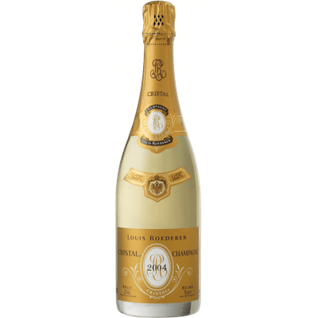
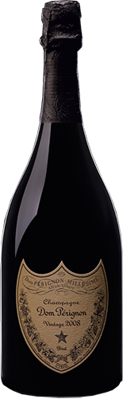

<!DOCTYPE html>
<html lang="es">
<head>
    <meta charset="UTF-8">
    <meta http-equiv="X-UA-Compatible" content="IE=edge">
    <meta name="viewport" content="width=device-width, initial-scale=1.0">
    <title>Espumantes en vinoteca</title>

    <meta name="keywords" content="vinoteca, bodega, elexir, vinos, malbec, petit verdot, cavernet savignone, torrontes,
    chardonnay">
    

                <!-- Fonts -->

    <link href="https://fonts.googleapis.com/css2?family=Gentium+Plus&family=Indie+Flower&family=Oregano:ital@1&display=swap" rel="stylesheet">
    <link href="https://fonts.googleapis.com/css2?family=Emilys+Candy&family=Gentium+Plus&family=Indie+Flower&family=Oregano:ital@1&display=swap" rel="stylesheet">
                <!-- Link css -->
    <link rel="stylesheet" href="../estilos/bootstrap.min.css">
    <link rel="stylesheet" href="../estilos/estilos.css">
</head>
</html>


<body>
    <header class="header">
        <h1 class="titulo">Elexir Wines & Deli</h1>
        
        <header class="col-md-12">
    
          <nav class="navbar-center navbar-dark bg-dark navbar-expand-lg">
              <div class="container-fluid">
                
                <button class="navbar-toggler" type="button" data-bs-toggle="collapse" data-bs-target="#navbarNavAltMarkup" aria-controls="navbarNavAltMarkup" aria-expanded="false" aria-label="Toggle navigation">
                  <span class="navbar-toggler-icon"></span>
                </button>
                <div class="collapse navbar-collapse" id="navbarNavAltMarkup">
                  <div class="navbar-nav">
                    
                    <a class="nav-link active " aria-current="page" href="../index.html">Home</a>
                    <a class="nav-link" href="vinos.html">Vinos</a>
                    <a class="nav-link" href="espumantes.html">Espumantes</a>
                    <a class="nav-link" href="delicattessen.html">Delicattessen</a>
                    <a class="nav-link" href="contacto.html">Contacto</a>
      
                    
                  </a>
                  </div>
                </div>
              </div>
            </nav>
          </header>
    <div>
        <h2 class="parrafoimp">Vinos Espumantes</h2>
        
       
        <div class="container">
          <div class="row">
          <div class="col">
         
        </div>
    
        <div class="col-6"> 
       <p class="infovinos text-white">Brut - Extra brut - Nature - Brut Nature
        $1000
      </p>    
      </div>
        <div class="">
          <div class="row">
          <div class="col">
         
        </div>
    
        <div class="col-6"> 
        <p class="infovinos text-white"> Brut - Extra brut - Nature - Brut Nature
          $1000 </p>
        </div>
         
        
        
      <div class="container">
        <div class="row">
        <div class="col">
       
      </div>
    
        <div class="col-6"> 
          <p class="infovinos text-white">Brut - Extra brut - Nature - Brut Nature
            $1000 </p>
      </div>
      <div class="">
        <div class="row">
        <div class="col">
       
      </div>
    
      <div class="col-6"> 
        <p class="infovinos text-white">Brut - Extra brut - Nature - Brut Nature
          $1000 </p>
      </div>

        <h3 class="parrafoimp" >Los vinos espumantes o espumosos son un producto obtenido mediante primera o segunda fermentación de uvas frescas, de mosto de uva o de vino que, al descorchar el envase, desprende dióxido de carbono procedente exclusivamente de la fermentación.</h3>
        <p class="parrafoimp">Dom Pérignon está considerado como uno de los champagnes más valorados y prestigiosos del mundo.Se elabora el según el método champenoise, que consiste en fermentar por segunda vez el vino cuando éste ya está en su botella, añadiendo en la fermentación, levadura y azúcares. El champagne Dom Perignon cuenta además, con un porcentaje de Pinot Noir que se ha transforma en vino en tinto. En este champagne el tiempo mínimo de envejecimiento en botella es de 12 meses.
        </p>
    </div>

    <footer class="container-fluid col-xs-4 col-sm-8 col-md-10 col-lg-12 footer bg-dark">
        <h2>Seguinos en</h2>
        <h3>Facebook</h3>
        <h3>Instagram</h3>
        <h3>Twitter</h3>
    
        <h4>Copyright © 2018 - Diseño Web realizado por Della Maggiore Iván</h4>
    </footer>
    <script src="../js/bootstrap.min.js"></script>
    
</body>


